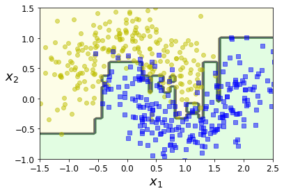

Random Forests
All credits to Aurelien Geron, adapted from his book “Hands-on Machine Learning”
Setup#
First, let’s make sure this notebook works well in both python 2 and 3, import a few common modules, ensure MatplotLib plots figures inline and prepare a function to save the figures:
# To support both python 2 and python 3
from __future__ import division, print_function, unicode_literals
# Common imports
import numpy as np
import os
# to make this notebook's output stable across runs
np.random.seed(42)
# To plot pretty figures
%matplotlib inline
import matplotlib as mpl
import matplotlib.pyplot as plt
mpl.rc('axes', labelsize=14)
mpl.rc('xtick', labelsize=12)
mpl.rc('ytick', labelsize=12)
# Where to save the figures
def image_path(fig_id):
return "images/"+fig_id
def save_fig(fig_id, tight_layout=True):
print("Saving figure", fig_id)
if tight_layout:
plt.tight_layout()
plt.savefig(image_path(fig_id) + ".png", format='png', dpi=300)
Random Forests#
from sklearn.ensemble import BaggingClassifier
from sklearn.tree import DecisionTreeClassifier
from sklearn.model_selection import train_test_split
from sklearn.datasets import make_moons
X, y = make_moons(n_samples=500, noise=0.30, random_state=42)
X_train, X_test, y_train, y_test = train_test_split(X, y, random_state=42)
bag_clf = BaggingClassifier(
DecisionTreeClassifier(splitter="random", max_leaf_nodes=16, random_state=42),
n_estimators=500, max_samples=1.0, bootstrap=True, n_jobs=-1, random_state=42)
bag_clf.fit(X_train, y_train)
y_pred = bag_clf.predict(X_test) ## test a bagging classifier
from sklearn.ensemble import RandomForestClassifier
rnd_clf = RandomForestClassifier(n_estimators=500, max_leaf_nodes=16, n_jobs=-1, random_state=42) ## compare with random forest
rnd_clf.fit(X_train, y_train)
y_pred_rf = rnd_clf.predict(X_test)
np.sum(y_pred == y_pred_rf) / len(y_pred) # almost identical predictions
0.976
Find out the importance of the features in the iris dataset
from sklearn.datasets import load_iris
iris = load_iris()
rnd_clf = RandomForestClassifier(n_estimators=500, n_jobs=-1, random_state=42)
rnd_clf.fit(iris["data"], iris["target"])
for name, score in zip(iris["feature_names"], rnd_clf.feature_importances_):
print(name, score)
sepal length (cm) 0.11249225099876375
sepal width (cm) 0.02311928828251033
petal length (cm) 0.4410304643639577
petal width (cm) 0.4233579963547682
rnd_clf.feature_importances_
array([0.11249225, 0.02311929, 0.44103046, 0.423358 ])
Feature importance#
try:
from sklearn.datasets import fetch_openml
mnist = fetch_openml('mnist_784', version=1)
mnist.target = mnist.target.astype(np.int64)
except ImportError:
from sklearn.datasets import fetch_mldata
mnist = fetch_mldata('MNIST original')
rnd_clf = RandomForestClassifier(n_estimators=10, random_state=42)
rnd_clf.fit(mnist["data"], mnist["target"])
RandomForestClassifier(n_estimators=10, random_state=42)
def plot_digit(data):
image = data.reshape(28, 28)
plt.imshow(image, cmap = mpl.cm.hot,
interpolation="nearest")
plt.axis("off")
plot_digit(rnd_clf.feature_importances_)
cbar = plt.colorbar(ticks=[rnd_clf.feature_importances_.min(), rnd_clf.feature_importances_.max()])
cbar.ax.set_yticklabels(['Not important', 'Very important'])
save_fig("mnist_feature_importance_plot")
plt.show()
Saving figure mnist_feature_importance_plot
AdaBoost#
from matplotlib.colors import ListedColormap
def plot_decision_boundary(clf, X, y, axes=[-1.5, 2.5, -1, 1.5], alpha=0.5, contour=True):
x1s = np.linspace(axes[0], axes[1], 100)
x2s = np.linspace(axes[2], axes[3], 100)
x1, x2 = np.meshgrid(x1s, x2s)
X_new = np.c_[x1.ravel(), x2.ravel()]
y_pred = clf.predict(X_new).reshape(x1.shape)
custom_cmap = ListedColormap(['#fafab0','#9898ff','#a0faa0'])
plt.contourf(x1, x2, y_pred, alpha=0.3, cmap=custom_cmap)
if contour:
custom_cmap2 = ListedColormap(['#7d7d58','#4c4c7f','#507d50'])
plt.contour(x1, x2, y_pred, cmap=custom_cmap2, alpha=0.8)
plt.plot(X[:, 0][y==0], X[:, 1][y==0], "yo", alpha=alpha)
plt.plot(X[:, 0][y==1], X[:, 1][y==1], "bs", alpha=alpha)
plt.axis(axes)
plt.xlabel(r"$x_1$", fontsize=18)
plt.ylabel(r"$x_2$", fontsize=18, rotation=0)
from sklearn.ensemble import AdaBoostClassifier
ada_clf = AdaBoostClassifier(
DecisionTreeClassifier(max_depth=1), n_estimators=200,
algorithm="SAMME.R", learning_rate=0.5, random_state=42)
ada_clf.fit(X_train, y_train)
AdaBoostClassifier(base_estimator=DecisionTreeClassifier(max_depth=1),
learning_rate=0.5, n_estimators=200, random_state=42)
plot_decision_boundary(ada_clf, X, y)

## One can also use boosting with SVC!
from sklearn.svm import SVC
m = len(X_train)
plt.figure(figsize=(11, 4))
for subplot, learning_rate in ((121, 1), (122, 0.5)):
sample_weights = np.ones(m)
plt.subplot(subplot)
for i in range(5):
svm_clf = SVC(kernel="rbf", C=0.05, gamma="auto", random_state=42)
svm_clf.fit(X_train, y_train, sample_weight=sample_weights) ## difference here is the addition of sample weights!
y_pred = svm_clf.predict(X_train)
## manually increase the weights at each iteration!
sample_weights[y_pred != y_train] *= (1 + learning_rate)
plot_decision_boundary(svm_clf, X, y, alpha=0.2)
plt.title("learning_rate = {}".format(learning_rate), fontsize=16)
if subplot == 121:
plt.text(-0.7, -0.65, "1", fontsize=14)
plt.text(-0.6, -0.10, "2", fontsize=14)
plt.text(-0.5, 0.10, "3", fontsize=14)
plt.text(-0.4, 0.55, "4", fontsize=14)
plt.text(-0.3, 0.90, "5", fontsize=14)
save_fig("boosting_plot")
plt.show()
Saving figure boosting_plot
Gradient Boosting#
np.random.seed(42)
X = np.random.rand(100, 1) - 0.5
y = 3*X[:, 0]**2 + 0.05 * np.random.randn(100) ## generate dataset
from sklearn.tree import DecisionTreeRegressor
tree_reg1 = DecisionTreeRegressor(max_depth=2, random_state=42)
tree_reg1.fit(X, y)
DecisionTreeRegressor(max_depth=2, random_state=42)
y2 = y - tree_reg1.predict(X) ## determine residuals!
tree_reg2 = DecisionTreeRegressor(max_depth=2, random_state=42)
tree_reg2.fit(X, y2)
DecisionTreeRegressor(max_depth=2, random_state=42)
y3 = y2 - tree_reg2.predict(X) ## determine residuals!
tree_reg3 = DecisionTreeRegressor(max_depth=2, random_state=42)
tree_reg3.fit(X, y3)
DecisionTreeRegressor(max_depth=2, random_state=42)
X_new = np.array([[0.8]])
y_pred = sum(tree.predict(X_new) for tree in (tree_reg1, tree_reg2, tree_reg3)) ## sum the three to get actual result
y_pred
array([0.75026781])
def plot_predictions(regressors, X, y, axes, label=None, style="r-", data_style="b.", data_label=None):
x1 = np.linspace(axes[0], axes[1], 500)
y_pred = sum(regressor.predict(x1.reshape(-1, 1)) for regressor in regressors)
plt.plot(X[:, 0], y, data_style, label=data_label)
plt.plot(x1, y_pred, style, linewidth=2, label=label)
if label or data_label:
plt.legend(loc="upper center", fontsize=16)
plt.axis(axes)
plt.figure(figsize=(11,11))
plt.subplot(321)
plot_predictions([tree_reg1], X, y, axes=[-0.5, 0.5, -0.1, 0.8], label="$h_1(x_1)$", style="g-", data_label="Training set")
plt.ylabel("$y$", fontsize=16, rotation=0)
plt.title("Residuals and tree predictions", fontsize=16)
plt.subplot(322)
plot_predictions([tree_reg1], X, y, axes=[-0.5, 0.5, -0.1, 0.8], label="$h(x_1) = h_1(x_1)$", data_label="Training set")
plt.ylabel("$y$", fontsize=16, rotation=0)
plt.title("Ensemble predictions", fontsize=16)
plt.subplot(323)
plot_predictions([tree_reg2], X, y2, axes=[-0.5, 0.5, -0.5, 0.5], label="$h_2(x_1)$", style="g-", data_style="k+", data_label="Residuals")
plt.ylabel("$y - h_1(x_1)$", fontsize=16)
plt.subplot(324)
plot_predictions([tree_reg1, tree_reg2], X, y, axes=[-0.5, 0.5, -0.1, 0.8], label="$h(x_1) = h_1(x_1) + h_2(x_1)$")
plt.ylabel("$y$", fontsize=16, rotation=0)
## here plot just the third regressor!
plt.subplot(325)
plot_predictions([tree_reg3], X, y3, axes=[-0.5, 0.5, -0.5, 0.5], label="$h_3(x_1)$", style="g-", data_style="k+")
plt.ylabel("$y - h_1(x_1) - h_2(x_1)$", fontsize=16)
plt.xlabel("$x_1$", fontsize=16)
## here plot the sum of the three regressors!
plt.subplot(326)
plot_predictions([tree_reg1, tree_reg2, tree_reg3], X, y, axes=[-0.5, 0.5, -0.1, 0.8], label="$h(x_1) = h_1(x_1) + h_2(x_1) + h_3(x_1)$")
plt.xlabel("$x_1$", fontsize=16)
plt.ylabel("$y$", fontsize=16, rotation=0)
save_fig("gradient_boosting_plot")
plt.show()
Saving figure gradient_boosting_plot
from sklearn.ensemble import GradientBoostingRegressor ## let's now look ata the standard model!
gbrt = GradientBoostingRegressor(max_depth=2, n_estimators=3, learning_rate=1.0, random_state=42)
gbrt.fit(X, y)
GradientBoostingRegressor(learning_rate=1.0, max_depth=2, n_estimators=3,
random_state=42)
gbrt_slow = GradientBoostingRegressor(max_depth=2, n_estimators=200, learning_rate=0.1, random_state=42)
gbrt_slow.fit(X, y)
GradientBoostingRegressor(max_depth=2, n_estimators=200, random_state=42)
plt.figure(figsize=(11,4))
plt.subplot(121)
plot_predictions([gbrt], X, y, axes=[-0.5, 0.5, -0.1, 0.8], label="Ensemble predictions")
plt.title("learning_rate={}, n_estimators={}".format(gbrt.learning_rate, gbrt.n_estimators), fontsize=14)
plt.subplot(122)
plot_predictions([gbrt_slow], X, y, axes=[-0.5, 0.5, -0.1, 0.8])
plt.title("learning_rate={}, n_estimators={}".format(gbrt_slow.learning_rate, gbrt_slow.n_estimators), fontsize=14)
save_fig("gbrt_learning_rate_plot")
plt.show()
Saving figure gbrt_learning_rate_plot
Gradient Boosting with Early stopping#
import numpy as np
from sklearn.model_selection import train_test_split
from sklearn.metrics import mean_squared_error
X_train, X_val, y_train, y_val = train_test_split(X, y, random_state=49)
gbrt = GradientBoostingRegressor(max_depth=2, n_estimators=120, random_state=42)
gbrt.fit(X_train, y_train)
errors = [mean_squared_error(y_val, y_pred)
for y_pred in gbrt.staged_predict(X_val)] ## staged predict provides the prediction of each step!
bst_n_estimators = np.argmin(errors) + 1 ## find out which is the best estimator (number of trees)
## retrain the best one
gbrt_best = GradientBoostingRegressor(max_depth=2,n_estimators=bst_n_estimators, random_state=42)
gbrt_best.fit(X_train, y_train)
GradientBoostingRegressor(max_depth=2, n_estimators=56, random_state=42)
min_error = np.min(errors)
plt.figure(figsize=(11, 4))
plt.subplot(121)
plt.plot(errors, "b.-") ## produces blue line and dots
plt.plot([bst_n_estimators, bst_n_estimators], [0, min_error], "k--")
plt.plot([0, 120], [min_error, min_error], "k--")
plt.plot(bst_n_estimators, min_error, "ko")
plt.text(bst_n_estimators, min_error*1.2, "Minimum", ha="center", fontsize=14)
plt.axis([0, 120, 0, 0.01])
plt.xlabel("Number of trees")
plt.title("Validation error", fontsize=14)
plt.subplot(122)
plot_predictions([gbrt_best], X, y, axes=[-0.5, 0.5, -0.1, 0.8])
plt.title("Best model (%d trees)" % bst_n_estimators, fontsize=14)
save_fig("early_stopping_gbrt_plot")
plt.show()
Saving figure early_stopping_gbrt_plot
## alternative, warm_start: store the estimator in each step! (you don't need to retrain with the best one, simply break)
gbrt = GradientBoostingRegressor(max_depth=2, warm_start=True, random_state=42)
min_val_error = float("inf")
error_going_up = 0
for n_estimators in range(1, 120):
gbrt.n_estimators = n_estimators
gbrt.fit(X_train, y_train)
y_pred = gbrt.predict(X_val)
val_error = mean_squared_error(y_val, y_pred)
if val_error < min_val_error:
min_val_error = val_error
error_going_up = 0
else:
error_going_up += 1
if error_going_up == 5:
break # early stopping
print(gbrt.n_estimators)
61
print("Minimum validation MSE:", min_val_error)
Minimum validation MSE: 0.002712853325235463
Stacking Ensemble#
Exercise: Run the individual classifiers from the last part in the ensembles notebook to make predictions on the validation set, and create a new training set with the resulting predictions: each training instance is a vector containing the set of predictions from all your classifiers for an image, and the target is the image’s class. Train a classifier on this new training set.
from sklearn.ensemble import RandomForestClassifier, ExtraTreesClassifier
from sklearn.svm import LinearSVC
from sklearn.neural_network import MLPClassifier
random_forest_clf = RandomForestClassifier(n_estimators=10, random_state=42)
extra_trees_clf = ExtraTreesClassifier(n_estimators=10, random_state=42)
mlp_clf = MLPClassifier(random_state=42)
estimators = [random_forest_clf, extra_trees_clf, mlp_clf]
from sklearn.datasets import fetch_openml
mnist = fetch_openml('mnist_784', version=1, cache=True)
X_train_val, X_test, y_train_val, y_test = train_test_split(
mnist.data, mnist.target, test_size=10000, random_state=42)
X_train, X_val, y_train, y_val = train_test_split(
X_train_val, y_train_val, test_size=10000, random_state=42)
for estimator in estimators:
print("Training the", estimator)
estimator.fit(X_train, y_train)
Training the RandomForestClassifier(n_estimators=10, random_state=42)
Training the ExtraTreesClassifier(n_estimators=10, random_state=42)
Training the MLPClassifier(random_state=42)
## create yet another independent sample for training the Blender!
X_val_predictions = np.empty((len(X_val), len(estimators)), dtype=np.float32)
for index, estimator in enumerate(estimators):
X_val_predictions[:, index] = estimator.predict(X_val)
X_val_predictions
array([[5., 5., 5.],
[8., 8., 8.],
[2., 2., 2.],
...,
[7., 7., 7.],
[6., 6., 6.],
[7., 7., 7.]], dtype=float32)
rnd_forest_blender = RandomForestClassifier(n_estimators=200, oob_score=True, random_state=42)
rnd_forest_blender.fit(X_val_predictions, y_val)
RandomForestClassifier(n_estimators=200, oob_score=True, random_state=42)
rnd_forest_blender.oob_score_
0.9652
for index, estimator in enumerate(estimators):
print (type(estimator),mean_squared_error(estimator.predict(X_val).astype(np.float64),y_val))
<class 'sklearn.ensemble._forest.RandomForestClassifier'> 0.8358
<class 'sklearn.ensemble._forest.ExtraTreesClassifier'> 0.9221
<class 'sklearn.neural_network._multilayer_perceptron.MLPClassifier'> 0.6727